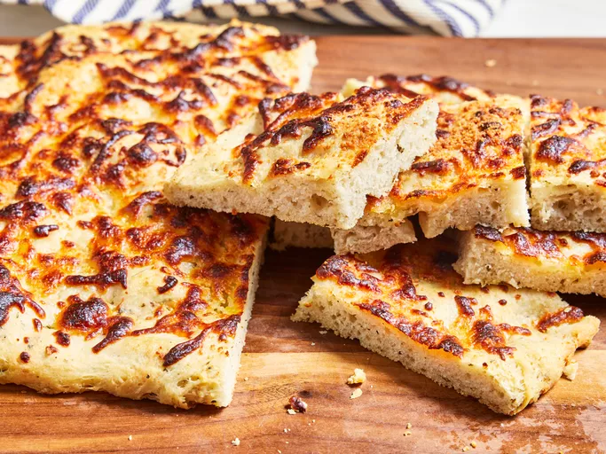

Focaccia

Description
Ingredients
- 2 ¾ cups all-purpose flour
- 1 tablespoon active dry yeast
- 1 teaspoon salt
- 1 teaspoon white sugar
- 1 teaspoon garlic powder
- 1 teaspoon dried oregano
- 1 teaspoon dried thyme
- 1/2 teaspoon dried basil
- 1 pinch ground black pepper
- 1 cup water
- 1 tablespoon vegetable oil
- 2 tablespoons olive oil
- 1 cup mozzarella
- 1 tablespoon grated Parmesan cheese
Steps
- Combine flour, yeast, salt, sugar, garlic powder, oregano, thyme, basil, and black pepper in a large bowl. Add water and vegetable oil, then mix until dough comes together.
- Turn dough out onto a lightly floured surface and knead until smooth and elastic.
- Lightly oil a large bowl; place the dough in the bowl and turn to coat with oil. Cover with a clean, damp cloth and let rise in a warm place for 20 minutes.
- Preheat the oven to 450 degrees F (230 degrees C). Lightly grease a baking sheet.
- Punch dough down and place on prepared baking sheet. Pat into a 1/2 inch thick rectangle. Brush top with olive oil and sprinkle with mozzarella and Parmesan cheese.
- Bake in the preheated until golden brown, about 15 minutes.
- Cut into 12 pieces and serve warm.
More recipes